Eritema gyratum repens (EGR) ou doença de Gammel é caracterizado por anéis concêntricos de placas eritematosas de migração rápida que cobrem uma grande porcentagem da superfície corporal, formando padrões circulares ou ondulados, semelhantes a "ondas no mar" ou "madeira em grão". É considerado um quadro típico de síndrome cutânea paraneoplásica.
Epidemiologia
Considera-se uma doença rara, ocorrendo predominantemente em pessoas de etnia branca. A proporção entre homens e mulheres é de 2: 1. Geralmente ocorre em pacientes acima de 40 anos, com idade média de 63 anos.
Fisiopatologia
Embora a causa exata seja desconhecida, vários mecanismos imunológicos foram implicados na sua patogênese. Uma teoria é que o tumor pode induzir anticorpos que reagem de forma cruzada com a membrana basal da pele. Em alternativa, alguns propõem que o tumor pode produzir polipeptídios que se ligam aos antígenos da pele e torna-se imunogênico. Ainda outros postulam que a deposição de complexos antígenos-anticorpos tumorais na membrana basal é responsável pela dermatite reativa. Os padrões de imunofluorescência observados de IgG, C3 e C4 na membrana basal confirmam um possível mecanismo imunológico.
Manifestações clínicas
As lesões podem migrar diariamente, alterando sua forma e localização. Geralmente acompanhadas de coceira (prurido). Na grande maioria dos casos (70-80%), há uma malignidade associada ao aparecimento do EGR, geralmente carcinoma broncogênico, seguido por carcinoma de mama, bexiga, útero e/ou colo do útero, linfoma, leucemia, trato gastrintestinal (estômago) e próstata. A erupção cutânea normalmente precede a detecção de malignidade em 4 a 9 meses, mas pode ocorrer simultaneamente ou depois do surgimento da neoplasia. O intervalo de tempo entre a erupção de eritema gyratum repens e a detecção do tumor pode variar desde apresentação simultânea até 6 anos após a erupção cutânea. Há relato de que ocorreu até 7 meses após a detecção de malignidade. Os restantes 30% são associados a outras dermatoses (pitiríase rubra pilaris, psoríase, ictiose, tuberculose pulmonar, síndrome de lúpus eritematoso, CREST (calcinose, fenômeno de Raynaud, síndrome da motilidade esofágica, esclerodactilia e telangiectasia), e como reação de drogas a azatioprina em paciente com hepatite autoimune ou em uso de interferon-alfa peguilado. Há envolvimento de áreas maiores do corpo, principalmente tronco e extremidades; migração em ritmo rápido (1 cm/dia); prurido intenso; curso de erupção cutânea que reflete o da doença subjacente. Com a remoção do tumor, a erupção cutânea e o alívio do prurido ocorrem dentro de 6 semanas. A manifestação dermatológica clássica é de um eritema disseminado, pruriginoso e descamativo, que se move rapidamente, produzindo figuras concêntricas, lembrando a superfície de madeira.
Diagnóstico
Embora a eosinofilia seja observada em 60% dos casos, o diagnóstico de EGR é clínico. O EGR possui características histopatológicas inespecíficas, tais como: acantose, hiperqueratose leve, paraqueratose focal e espongiose confinados à epiderme e derme superficial. Infiltrado mononuclear, linfocítico e histiocítico perivascular no plexo superficial também pode ser visto. Para investigação de neoplasia: Exames de imagem (tomografia, PET-CT), Endoscopias, marcadores tumorais, etc.
Diagnóstico diferencial
Os outros eritemas figurados devem ser considerados no diagnóstico diferencial. Uma variante chamada eritema gyratum repens de lúpus eritematoso bolhoso e vasculite leucocitoclástica apresentando-se como uma erupção eritema gyratum repens-like também foram relatados. Devem-se considerar também como diagnósticos diferenciais: penfigóide bolhoso; urticária crônica; doença de Lyme; tinea corporis; lúpus eritematoso cutâneo subagudo.
Tratamento
Várias terapias dermatológicas e imunossupressoras têm sido usadas. Corticosteroides tópicos ou anti-histamínicos para alívio da coceira. A vitamina A e a azatioprina também não conseguiram aliviar as manifestações da pele. A melhora ou resolução do EGR, assim como do seu prurido intenso, depende do reconhecimento e tratamento da malignidade subjacente (ex.: quimioterapia, radioterapia ou cirurgia para o câncer). Em pacientes com doença metastática, a resposta do EGR à quimioterapia é variável.
Importante: Se houver suspeita de EGR, é urgente investigar a presença de câncer, pois o diagnóstico precoce pode salvar vidas. Consulte um dermatologista ou oncologista imediatamente.
REFERÊNCIAS BIBLIOGRÁFICAS
1. Erythema gyratum repens: Not always a paraneoplastic disease. Galán-Gutiérrez M, Martínez-Peinado CM, Ruiz-Villaverde R.Rev Clin Esp (Barc). 2014 Oct;214(7):425-7.
2. Erythema gyratum repens of Gammel and Hodgkin's disease. Yebra Sotillo I, Garciá Bravo B, Camacho Martínez F.Med Cutan Ibero Lat Am. 1983;11(4):281-6.
3. Paraneoplastic erythema gyratum repens and deep vein thrombosis. Bennàssar Vicenç A, Fuertes de Vega I, Arguis Jiménez P, Iranzo Fernández P, Mascaró Galy JM.Med Clin (Barc). 2009 Jan 24;132(2):82.
4. Erythema gyratum repens. Eubanks LE, McBurney E, Reed R. Am J Med Sci. 2001;321:302- 5.
5. Erythema gyratum repens; skin manifestations in patient with carcinoma of breast. Gammel JA. AMA Arch Derm Syphilol. 1952;66:494-505.
Atlas de imagens 16

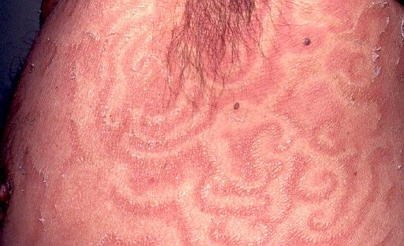

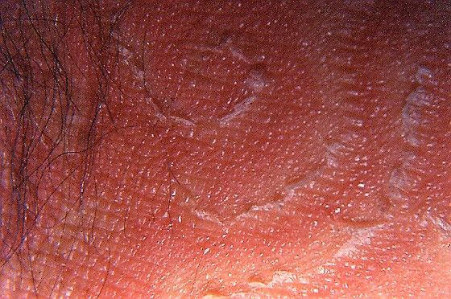

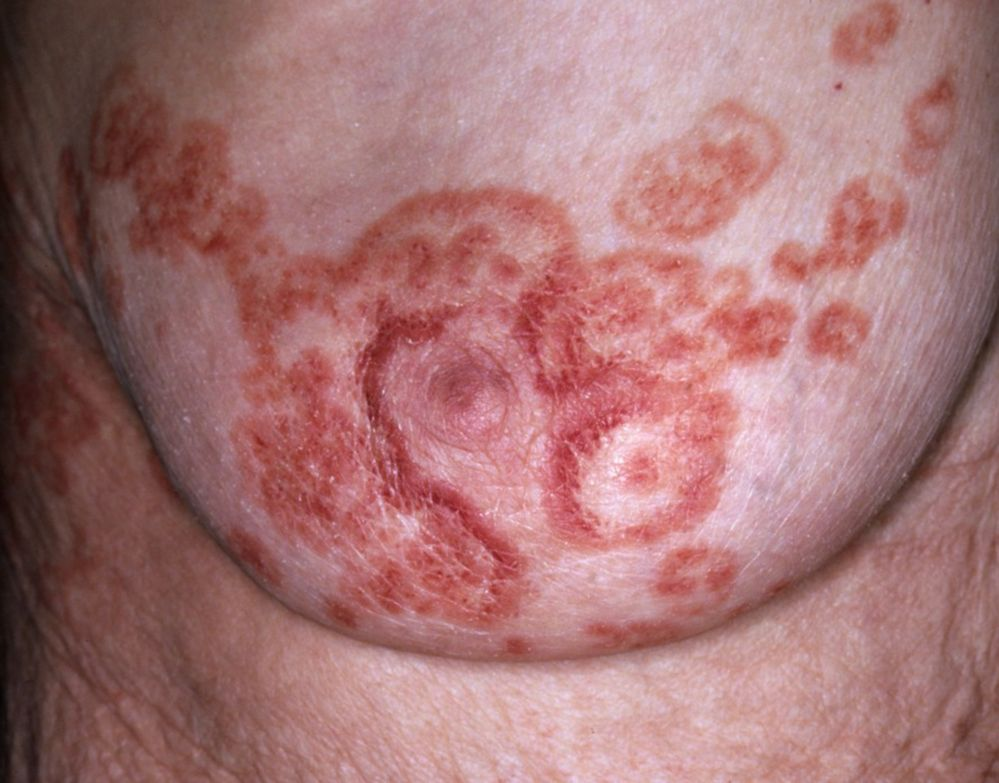

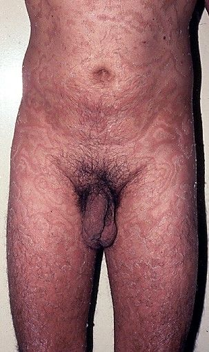

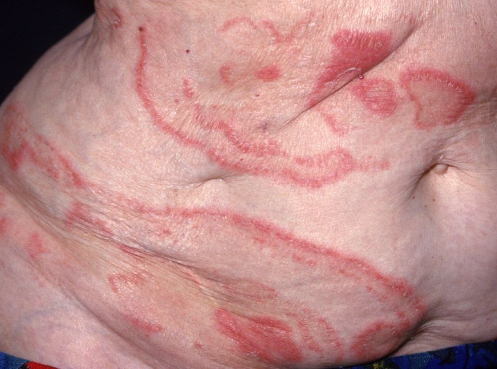

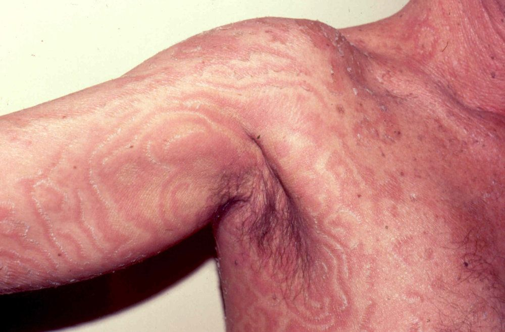

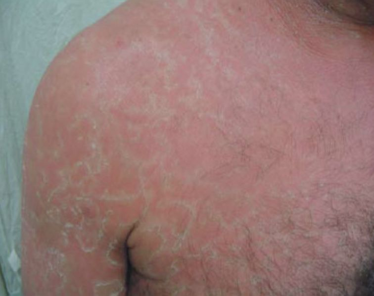

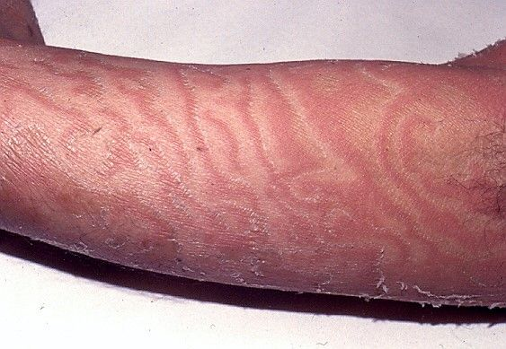

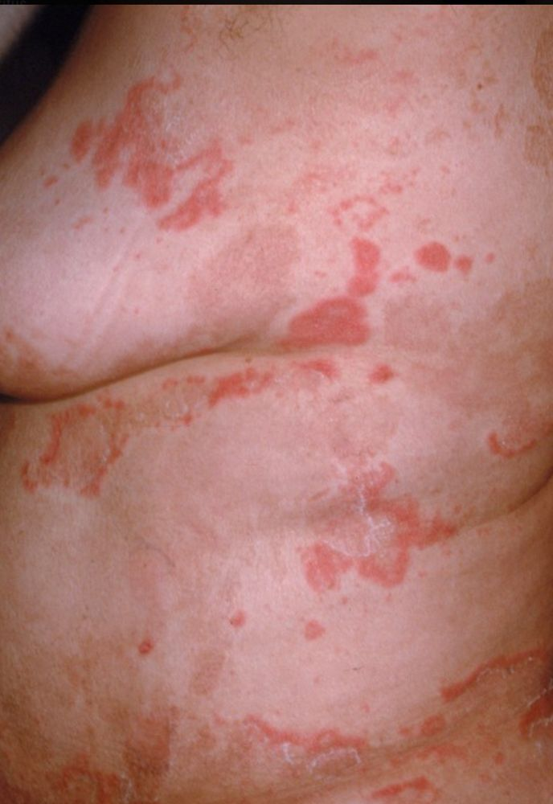

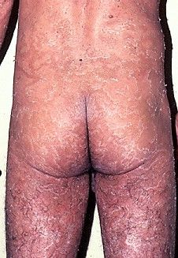

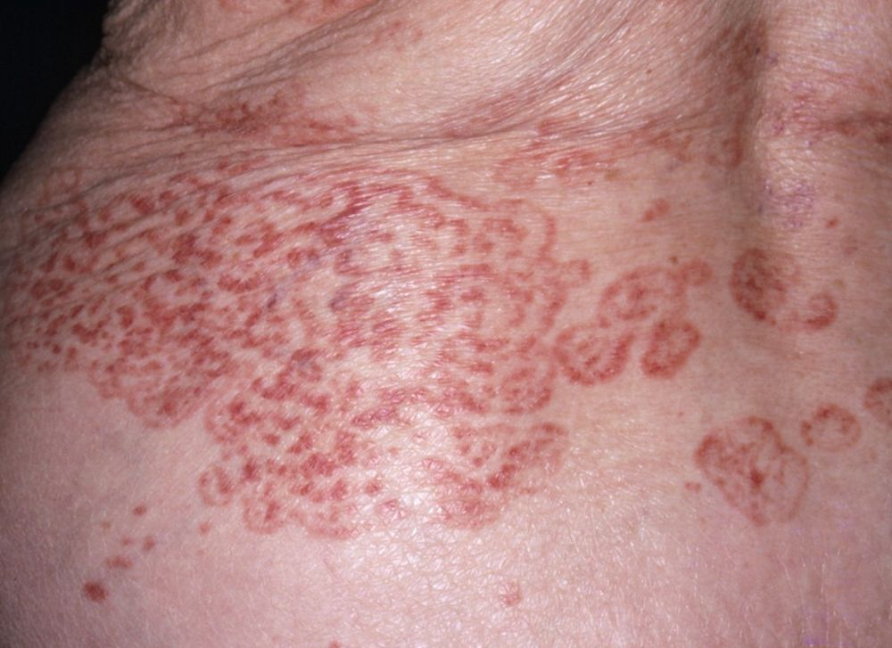

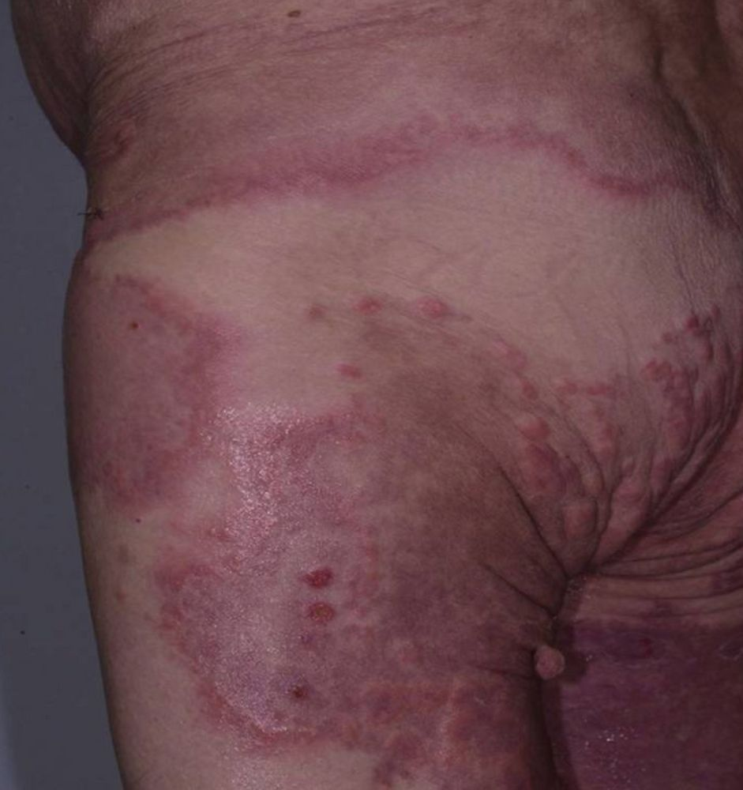

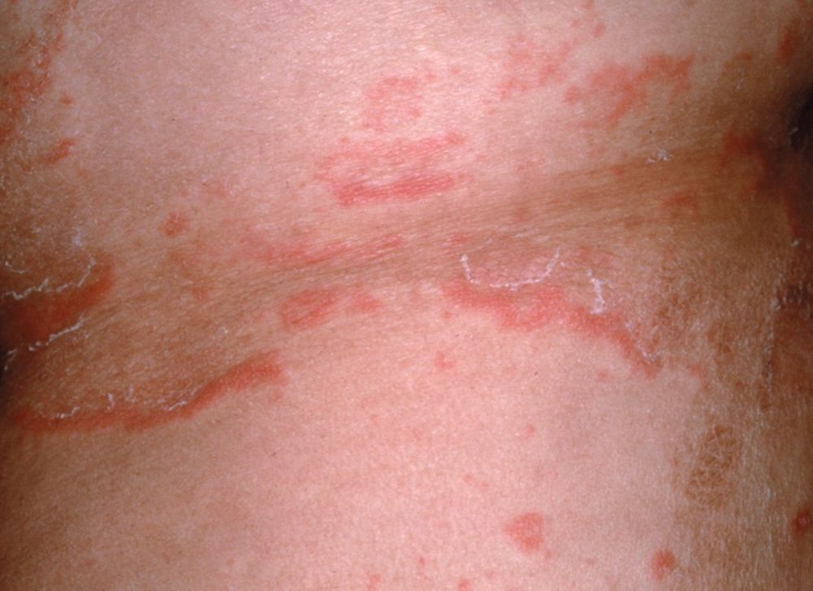

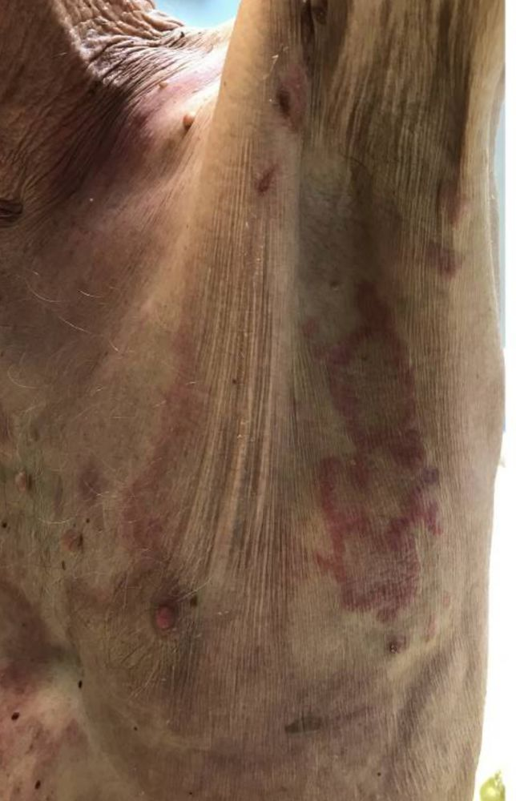

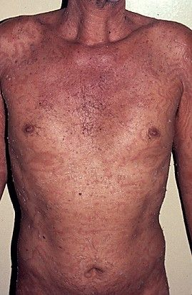

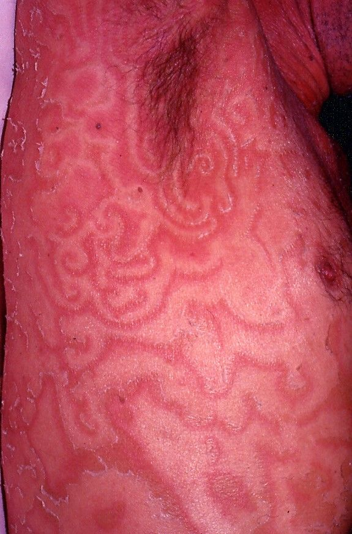
Na Skin Prime
Como podemos ajudar
Entre os recursos citados para Eritema Gyratum Repens, estes estão disponíveis na clínica:
Tratamentos
Diagnóstico